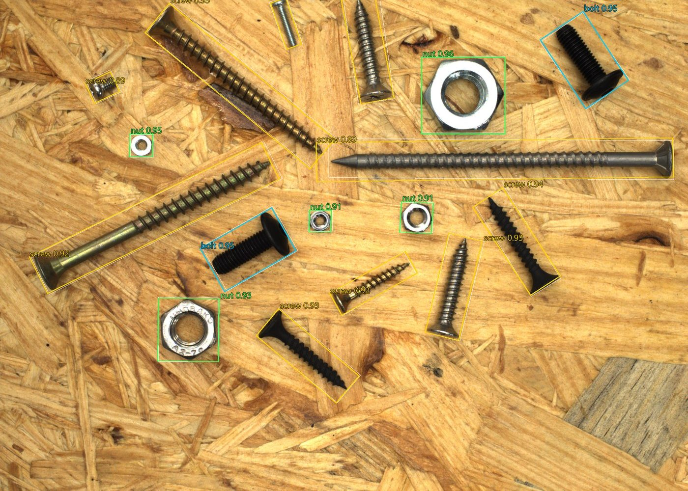
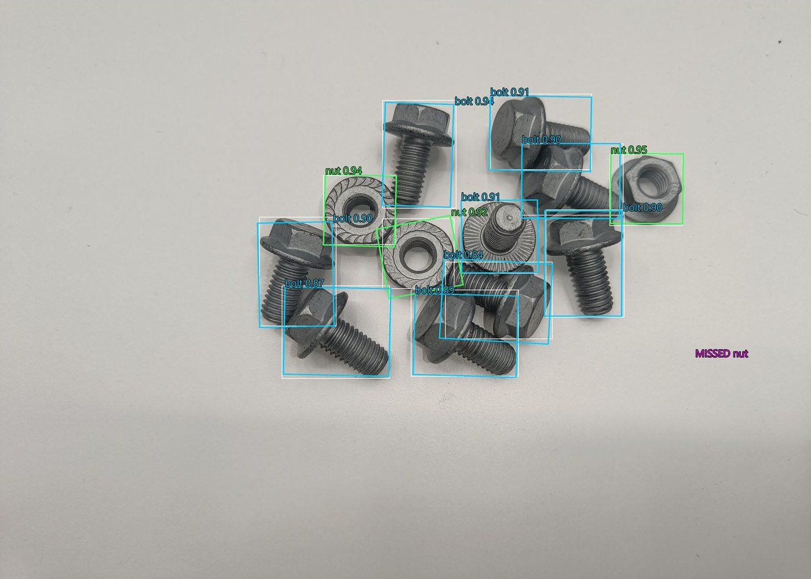
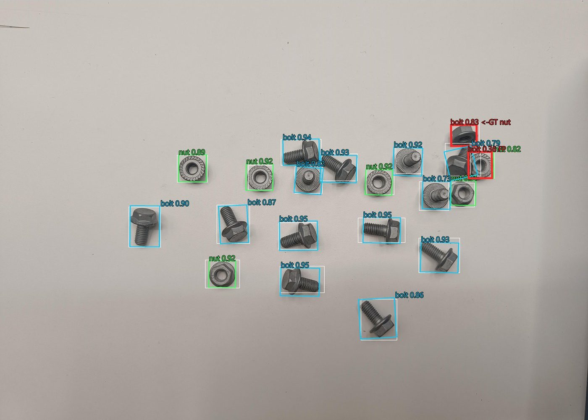

Gear Fault Classification
Six gear conditions, from healthy to a chipped tooth, classified from two-axis vibration data with five model families.
View Project03Computer vision, robotic bin picking2026
A research pipeline that detects screws, bolts and nuts and fits each with a rotated bounding box, so a gripper can be given both a part's position and its long-axis angle. The results so far are on public datasets; running it on a Raspberry Pi with a camera is the next step.
Parts in a bin lie at every angle. An upright box around a diagonal bolt also covers empty space and its neighbours, which tells a gripper very little. Oriented bounding boxes turn with each part, so the box itself gives position, size and angle.
Four public fastener datasets were audited. Two were usable for whole-part detection and make up the training set: MVTec Screws, whose 384 images carry truly rotated boxes, and Bin-Picking, whose 123 photos of flange bolts and nuts carry axis-aligned boxes. Together they give 507 images and 5,264 boxes.
Of the other two, one boxes only the screw head, so it was converted into a separate drive-type set that is not yet trained. The other was set aside because its boxes are mostly empty space. Each source names its parts differently, so every class is mapped by name onto one shared set (screw, bolt, nut), and the mapping is checked against each dataset's own class list before conversion.
Scores are reported per source, not only overall, because the combined score is dominated by the larger MVTec set. On the 72-image test split, mAP50-95 is 0.9713 on MVTec and 0.8873 on Bin-Picking: the model does better on separated parts on a board than on clustered parts, the conditions a robot actually picks from. The Bin-Picking test slice is only 12 images, so that number is noisy.
Orientation is measured only where it means something. MVTec is the only source with truly rotated labels, and there the median long-axis error on the test split is 0.56 degrees for screws and 0.83 degrees for bolts. Bin-Picking labels are axis-aligned, so its angle error says nothing about rotation.



Most Bin-Picking errors were false positives, not misses. A sweep of the confidence threshold and the non-maximum suppression (NMS) overlap limit on the validation split, which holds 174 Bin-Picking objects, raised precision from 0.811 to 0.900 and cut false positives from 35 to 14. Recall fell from 0.960 to 0.931, and F1 rose from 0.879 to 0.915. The confidence threshold does most of the work; stricter NMS adds a little more. Four class errors remain at every setting, so they need data rather than thresholds.
These thresholds are tuned on public validation data. Operating thresholds for a real rig will be set on its own camera data.
Every conversion step is checked: a validation suite covers label format, geometry, class coverage and splits, and every image keeps its source and licence in a manifest. A later review found the custom angle and matching code mixed pixel and normalised coordinates; it was corrected and the diagnostics rerun, and the results on this page come from that corrected evaluation.
Regression tests cover the measurement itself: wide, tall and square images, swapped and perpendicular boxes, crowded scenes, class confusion and empty scenes, along with pipeline guards and capture-split checks. They pass locally. A Windows and Linux CI workflow is written but not yet running.
The detector is a research baseline on public data; no camera rig or live system exists yet. The next steps are to export the model to a Raspberry Pi 4 B, measure its speed on recorded footage, then collect camera data from the rig, held out by session, to retrain and set thresholds.
Six gear conditions, from healthy to a chipped tooth, classified from two-axis vibration data with five model families.
View Project